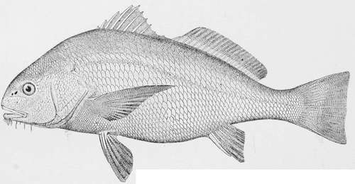
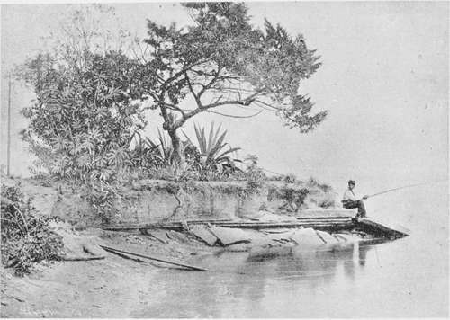
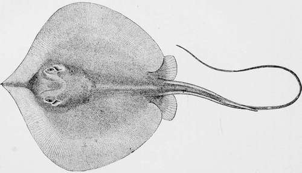
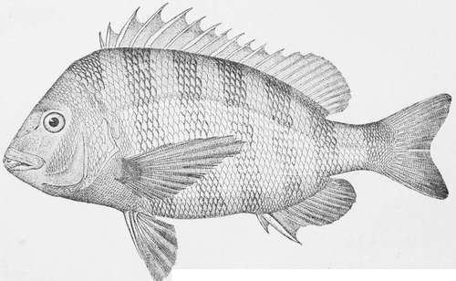

Bass-Fishing In Winter
Description
This section is from the book "American Game Fishes", by W. A. Perry. Also available from Amazon: American Game Fishes: Their Habits, Habitat, and Peculiarities; How, When, and Where to Angle for Them.
Bass-Fishing In Winter
"The noble bass, with scales intensely dyed, At bay and inlet drift in with the tide; A roving fish, deep channels it explores, Mud-tlats, and oyster-beds, and shelly shores."
-McLellan's Poems of the "Rod ana Gun.'"
In the month of February, 188-, leaving the frosts and snows of New York, with the mercury near zero, my young companion and I, after three days of easy travel, found ourselves under the sunny skies of Volusia County, East Florida, at a point known on the maps as Mosquito Inlet, and at the pleasant cottage of B. C. Pacetti, sometimes called "the count" -perhaps because one of nature's noblemen-at any rate the head fisherman of the coast. The house stands on the bank of the Halifax River, which enters the ocean a mile below, in a fine orange grove, at the time of our visit full of delicious fruit, of which we took many samples the first day.
My companion I will call "the major," because he was a minor, young, and ambitious of killing the big fish of which I had told him-his former experiences having been confined to Black Bass and Trout. In this narrative, I shall be known as "the judge" as everybody in the south is expected to have a title, and this one suits a man of ancient if not venerable aspect.
Having filled ourselves with the golden fruit, and drank by way of contrast of the powerfully flavored sulphur water that flows from a fountain in the grove, we unpacked our tackle and made ready for the morrow. It dawned bright and propitious, with the south wind, loved by anglers, even from the time of Father Walton. We started at eight o'clock after a breakfast of sheeps-head and oysters, cooked by our good hostess in a style the result of many years experience.
P. had a roomy and comfortable flat-bottomed boat ready for us, and with him at the oars, we went up the river, with the tide about one-quarter flood. "Where will you take us to-day?" I asked. "I think I will go up Spruce Creek; the tide will serve both ways." The Halifax River, so called, is one of those long, narrow bays or sounds, which are found along the Atlantic coast from the Delaware Bay to Florida; this one is about thirty miles long, running north and south; and from half a mile to a mile in width, shut off from the ocean by a narrow peninsula of sand hills, and navigable for small craft in its whole length. Another river or bay, coming from the south, enters the ocean at the same inlet; this is called the Hillsboro' River, and is some twenty-five miles long, being connected at its southern end with the Indian River by a canal. On the Hillsboro', is the town of New Smyrna, one of the oldest in Florida, having been founded during the English occupation in 1769. Its interesting and painful history may be found in a work called "Old St. Augustine," published in New York in 1885, by Chas. B. Reynolds. It was destroyed during the Seminole war, and afterward in the War of Secession, and has but lately begun to grow to the position which its situation and rich lands will ultimately give it.
Our host comes of the Minorcan race, which settled New Smyrna, one hundred and twenty years ago, and is a fine, vigorous looking man of fifty years.
We cross the Halifax River to the mouth of Spruce Creek, about one hundred yards wide, flowing through a labyrinth of islands and creeks reaching many miles south and west. Here P. stops at a sandy shoal to catch mullets for bait. This is done with a cast-net, in the use of which Florida fishermen are expert. A circular net, about ten feet in diameter, loaded at the edges with lead, and so arranged as to draw up into a bag, with pockets at the sides to retain the fish. P. takes the net in both hands, with the drawing cord in his mouth; he wades along the shoal, looking for Mullet; with a circular sweep the net falls on the water, and sinks to the bottom. He hauls it in slowly, and we see the glittering Mullet within the meshes. He comes to the boat with half a dozen fish, eight or ten inches long, bright and silvery. In the course of a few casts he gets twenty more, which will suffice for a day's fishing. The cast-net is absolutely necessary to the Florida fisherman, as the Mullet is used for bait for all the best fishes, except Drum and Sheeps-head. Besides which, the Mullet is, in summer, considered the best table-fish on the coast. The use of the cast-net looks easy, but it really requires considerable practice and some strength of arm to deliver it properly; and the beginner must be careiul to have no buttons on his dress to catch in the net, otherwise it may pull him down, as has often happened to ambitious novices.
Drum.
We then proceeded up the creek, the banks of which are low and covered with salt grass, and bordered with mangrove trees; the trees which, as we learn from scientists, have built up the peninsula of Florida, assisting the subaqueous work of the coral insect. We anchor in a deep channel about half a mile above the mouth of the creek, and near the bank; the boat swings to the tide. I take the stern, the major amidship, and P. at the bow. We then cut up a few Mullets into chunks of two inches square, and baited our hooks.
We each had a bamboo rod, eight feet long, with reels holding one hundred yards of line, with 7-0 Limerick hooks, and one ounce running sinkers. I made a cast about twenty five feet astern, and P., taking the major's rod, cast the bait into midstream fifty feet away. "Now," said he, "let the bait lie on the bottom; if there is any Bass around they'll find it." He baited his own hook, on a heavy hand-line, with half a Mullet, and swinging it around his head, cast it one hundred feet astern.
We were in a wilderness of wood and water, with no traces of human occupation. A flock of blackbirds circling above the marsh, a white heron sitting on a mangrove tree, a fish-hawk occasionally stooping for a fish, and a few turkey-buzzards wheeling aloft in graceful flight, were all the animal life in view.
"How far does the tide make up here?" said I.
"Three or four miles generally, but in rainy weather the creek is fresh clear to the mouth, so that the Black Bass are caught where we are now."
Pacettis' Point.
"What?" said the major. "Black Bass here?" "Plenty of them up the creek, and big ones at that," said Pacetti. "How large?"
"Well, I've seen them caught weighing ten or twelve pounds and I've heard of some as heavy as fifteen to eighteen pounds."
"What!" cried the major. "Bass weighing twelve to eighteen pounds! I never heard of such a thing; six or seven pounds is as large as they grow at the North."
"Well, they grow bigger in Florida, I reckon," said P.- "but I've got a Bass," and he began to haul in, hand over hand, and soon we saw the red sides of a big fish, darting here and there, at the end of his line. It was a Channel Bass of about ten pounds-a fine fat fish.
"That's the kind for you to hook, young man," said P. "Do you expect to hold one on that rod?"
"I would like to try, anyhow," said the major, and just then he had a strike; his line began to run out rapidly, and he tried to stop the fish.
"Better let him run," said I, "and put on the drag." This he did, and the fish showed itself on the surface, a five-pound Bass, which, after a few minutes play, was brought along-side, and gaffed.
"Well," said the major, "that's the biggest fish I ever caught on a rod."
"You will get some twice as big, before you leave the Halifax, "said P.
My bait had been lying for some time quietly on the bottom, and raising my rod, I found the hook fast to something; as I gave a pull, my line began to move slowly away, but with great force so that I could not check it.
"I think, P.," said I, "that I have hooked what our old friend from Rhode Island used to call a barn-door."
"Well," said he, "what will you do-cut it loose, or play it?"
"It is not a very large one," said I. "I will try to kill it, and show the major some sport." The Sting-ray ran out some twenty-five yards of line, and then went to the bottom, when it stuck fast. P. took up the killick, the lines were taken in, and the boat was placed over the fish, and P. punched it with a pole till it started on another run of twenty yards, then it stopped and was again punched and followed. Then the ray started off again, towing the boat, but this exhausted its strength, and I reeled it up alongside. P. turned it over, belly up, with his long-handled gaff, against the side of the boat, so that it could not use its tail; then with a big knife he gave it several stabs in the throat and breast. The blood gushed out freely, and the strength of the ray was soon exhausted. Then the tail, with its formidable weapon, was cut off, looking like a long black wagon whip. The fish was about three feet across, and with the tail, five feet long, weighed perhaps fifty pounds.
"There, major," said P., "you can dry this tail and take it home with you for a riding-whip." Then he let loose the ray, and let it drift down the tide. "The Sharks will soon find it; there's no better bait for a Shark than a chunk off a Stingaree."
Sure enough, the carcass had not floated a hundred yards, before we saw and heard a great commotion in the water, as of big fish struggling. "There," said P., "they have got it; but we had better move away a little; those Sharks will scare away the Bass."
We went round a bend in the creek, and found a wide pool of rather shallow water with a small island in the middle.
"Here is a good place for Bass; but the bottom is all oyster shells, and may cut your fine lines, but we'll give it a try." He anchored in the middle of the pool, the water being five feet deep on an oyster-shell bank. We threw out, and in about a minute I had a strike, and found myself fast to a good fish which took across the tide. After five minutes play I had it in the boat-a very red Bass of six pounds. "This is really a Red Bass," said I.
Sting-Ray- Trygon sabina.
"They grow red up in the fresh water," P. replied.
Now the major was fast to another; but his line came home without hook, cut off by the shells; then P. hauled in a five-pounder, and I got one of four pounds. But in my next cast my hook was cut off. We got three more School Bass here, when they stopped biting, and we moved up the creek half a mile to a large pool with a high hamak on the south side, covered with wild orange trees and magnolias.
(The above word is usually written "hammock," or "hummock," but I write "hamak," as instructed by Floridians. The late Capt. Douglas Dummet, of South Florida, an educated man, long resident on the Indian River, told me that the word belonged to the Seminole tongue, and was neither hammock nor hummock. This is also the spelling adopted by Mr. C. B. Reynolds, one of the editors of "Forest and Stream," himself a native of Florida.)
"Now, here," said P., "we are apt to get big fish, Bass, and sometimes a Grouper." He anchored the boat on the north side of the pool, in a deep hole where the tide ran strongly.
We with rods fished near the boat; P. sent his bait far out in the pool; the major had the first fish-a Black-fish of about a pound, which species is found smaller in these waters than further north. Then I hooked a Bass, seemingly of great size; it ran clear across the pool to the opposite bank, fifty or sixty yards away, then turning, came back at full speed, and ran wildly round the pool. After ten minutes of this work, I brought him to gaff, when it proved to be a six-pound Bass hooked in the vent, which attack in the rear had so alarmed the fish, that it became frantic and fought hard enough for a twelve-pounder. After the commotion in the pool had subsided, the major took a Bass of five pounds, and P. hooked a very large one, which, however after five minutes play, broke his hook and then escaped.
"That's a mean hook," said he; "I ought to have saved that Bass."
"Perhaps you did not play him long enough; it was a heavy fish," said I.
"I don't believe in fooling with them. I just haul them in and give 'em no quarters," said he.
"Well, here is a hook for you that ought to stand," giving him one of my best Cuttyhunks.
Presently my line went off steadily and swiftly, and I could not check it. After sixty yards had run out and the fish still went on, I said: "He has got most of my line; I think P., that you must raise the anchor and let him tow the boat." He did so, and paddled after the fish, so that I was able to recover most of my line, but the Bass towed us some twenty yards before it gave up, and rested on the surface. As we approached, it made one more run, and then turned over, exhausted-a fine, fat, copper-red fish, which weighed, after we landed, twenty-four pounds. The contest lasted twenty minutes.
We then returned to our former station, and it being past noon we opened the lunch-basket, where we found slices of corned beef, bread and butter, and doughnuts, also a dozen oranges fresh from the trees-which always taste better to me on the water than ashore.
"How many Bass have we?" said the major.
"Eight or ten Bass and a Trout; but we will get more yet," said P. "They bite well to-day; we have not lost a fish, except the one that broke my hook. Take another orange, judge."
"I will; they are the best oranges I ever ate."
"That's what most people say-the oranges that grow on these shell mounds are much finer than the St. John's River fruit."
"Do you ever send them to market:1" I asked.
"I tried it once, some years ago; I sent a few boxes to Jacksonville and when the merchant sent my account of sales, he brought me in debt seventy-five cents. Since then I find it better to eat them."
"I see," said I, "the weeds are beat down along the bank; are there any cattle on these marshes?"
"That's done by alligators-there's a big one lives about here, and I've tried to shoot him, for he eat up one of my best dogs, but the cunning brute hides away when he hears or sees a boat."
Just then the major, who had left his line in the water, saw it running off, and found a heavy fish hooked, which did not run like a Bass but fought near the bottom and seemed hard to move.
"That is a Rock Grouper," said P. ; "we often find them in this hole." After about five minutes hard pulling, which tried the rod severely, the fish was brought to the surface and gaffed-a thick-set fish, brown with light-colored spots, and small scales-weighing six or seven pounds. "Just as 1 thought, a Rock Grouper; a good fish it is; I have taken them in summer weighing twenty-five pounds."
As the tide had turned, we concluded to drop down with it, homeward; when we reached the shallow pool at the island, the major let out a spoon with thirty yards of line.
"You might catch a Bass or Trout that way," said P., "but you are likely to hook a Shark, and lose your spoon." As we left the pool through a narrow channel with a swift current, the major had a strike, and reeled in a handsome spotted fish of two pounds or so, which P. told him was a Trout.
"It certainly looks like the Lake Trout of the Adiron dacks," said the major; "but how does he come in the saltwater?"
"The fish is not a Trout," said I, "but a cousin of the northern Weak-fish, and not related to the Salmon; you see, it has no adipose fin. It is a good fish to eat, Salmon or not."
Now the major had another strike from a large fish which took a turn, and the line came in without the spoon. "That was a small Shark. I saw him when he bit off your spoon," said P.
"Do they always do that?"
"No, we sometimes save them-that is, if the hook is so fixed that they can't get hold with their teeth; but I have no use for Sharks, and am glad to let them go-except when we go a Sharking, and then I take a big hook with a chain, with a strong rope."
When we reached the main river, P. stopped on the west bank. "Perhaps you might pick up a Bass or two here, judge."
The tide was running out strongly, and we anchored about fifty feet from the marsh, and cast toward it. The major got the first fish-a five-pound Bass; and I soon got hold of a strong fish, which proved to be a five-pound Trout, which I boated after a few minutes play.
"Isn't that a beauty," said P., as he held it up admiringly. Next, the major caught a three-pound Cat-fish-a nasty slimy creature.
"Come, major," said I; "it's time to quit, if you are going to catch Cat-fish--and in the words of Father Isaac, 'We have had a most pleasant day for fishing and talking, and are returned home both weary and hungry, and now meat and rest will be pleasant.'" the sheep's-head.
Sargiis Oris, cuvier. Arthosargus Probatocephalus, gill; Diplodus Probato-cephalus, goode.
This popular fish is, it will be perceived, well equipped with scientific names; all, however, significant of its sheeplike profile and teeth. The name given by Cuvier, Sargus, says Prof. Goode, indicates its size and value; and Diplodus, used by others, meaning "double-toothed." The Sheep's-head is one of the few species which goes by the same name, wherever known, from Jamaica Bay to Cape Florida. The Florida people, however, omit the s, calling it the "Sheep-head." The ancients had a Sargus, to which Walton alludes, quoting his favorite Du Bartus, in a curious legend which attributes to the fish certain disreputable habits, unknown to our quiet Sheep's-head. This species is supposed to be hatched and bred in southern waters, mainly on both coasts of Florida, where the spawn is deposited at the mouth of rivers and inlets, in March and April, in the shallow water near the shore, where both sexes may be seen sporting on the sand-bars. At this time they become thin and unfit for food, and will take a Mullet bait, which, when in condition for the table, they reject. In summer they make a northern migration, as far as New York, and grow large and fat upon the mollusks and Crustacea, being taken up to fifteen pounds weight, and are considered a great luxury, bringing high prices.
In 1814, Dr. Mitchell wrote that "the Sheep's-head continued about New York from June to September, and was then abundant, so that hundreds have been taken at one haul of the seine in Jamaica Bay and Fire Island. They were highly colored, and the capture of one with a hook and line was considered the most desirable combination of luck and skill. He knew an ancient fisherman who used to record in a book the time, place, and circumstances of every Sheep's-head he caught." This high estimate continues, but the record of captures in New York waters would require few pages now. The farther south you go the more abundant the Sheep's-head become, though they nowhere take the hook freely till air and water are warm. In the St. John's River in Florida they will be found all the year, though during the prevalence of a "norther " few can be taken, as they run at these times into deep water.
Sheep's-Head-Dìplodus probatocephalus.
On the coasts of Florida, this is so abundant a species as to be rather undervalued. Anglers when they first arrive, engage in the pursuit of Sheep's-head with great eagerness, but after a time it becomes monotonous to catch them at the rate of forty or fifty in a tide, averaging three pounds each. Many go to five and six pounds. My heaviest weighed seven pounds, from many hundreds; and I have heard of one of ten pounds; many aie taken of four to eight ounces, which are returned to the water, fish being so abundant in Florida that the "fish hog" seldom appears.
I knew a man who caught Sheep's-head for market, and with a hand-line, and the barb filed off the hook. He could supply a smack with one hundred a day at five cents apiece. But the fish died in the well of the smack, and the enterprise was a failure. Although some Sheep's-head migrate, and some run up the rivers into fresh water, yet it is usually a stationary species, living in deep channels and tide-ways along the shores of the bays and inlets, among rocks and the roots of mangroves, and other trees that have fallen into the water, as these are soon covered with barnacles, upon which these fish feed, as well as upon crabs, clams, and oysters. Especially the small crab called the fiddler, which is a favorite bait, but it is easily taken off the hook by the projecting teeth of this fish. In places where much fishing is done, the Sheep's-head become very expert in stealing bait, and if you secure one out of four baits you do well. Where little disturbed, they seize the hook eagerly, and are easily taken by a stroke vigorous enough to penetrate the hard pavement of teeth which they carry. Their jaws are strong, and the hook must be equally so, and if large, it is necessary to give your fish line, till it is somewhat exhausted. When it is brought to the surface, it makes a violent rush to the bottom, and if too suddenly checked, hook, line, or rod is apt to be broken. It makes no long runs, like a Bass, but fights up and down, with heavy surges. A good-sized landing-net will prevent the loss of many fish, in boating them, and the novice had better beware of the sharp and strong fin-rays, and let his boatman unhook the fish.
As to its table qualities, it is among the best of sea-fishes, firm, rich, and well flavored; either boiled, if large, or fried if small. It lives upon crabs and mollusks, which is the food of our choicest fishes-like the Pompano of the salt-water, and the White-fish of the Great Lakes. During the spawning season, the Sheep's-head becomes unfit for food; this is in the spring months, when it is usually taken by northern anglers, who at once declare the southern fish to be inferior to those of the North. When taken in the fall or winter, there is little difference in quality. The Sheep's-head is also known to feed upon salt grass, and other vegetable matter along the flats. The natives usually fish with a hand-line, and drag in the fish by main strength; more can be taken in this way in a given time, but the only sporting method is with rod and reel.
The bottom being generally foul, many hooks and sinkers are lost, so that a good supply should be taken along. A taut line should be kept, for the bite of this fish is usually very light, and you will find the bait often gone without notice given; so raise the hooks often, and you catch the fish in the act of robbing you.
If feeding at all, the Sheep's-head will take a fiddler; next in value is a large crab, cut in pieces; then the hard-shell clam, like those in northern waters, but larger. At half-tide, either flood or ebb, these fish bite most freely; at slack water they often stop feeding.
It must not be supposed that even in Florida waters Sheep's-head can be taken abundantly every day. In cold raw weather, better smoke the pipe of peace by the fireside. On such days if mine host of Ponce Park wants a mess of fish, he goes with his cast-net to some deep hole in the river, and with one throw he gets a back load. At the Halifax River Inlet, at New Smyrna, and at the Indian River Inlet, the angler will usually find all the Sheep's-head he wants; doubtless in other places also, but these can be recommended.
In Jordan and Gilbert's Synopsis, the following description is given:
Continue to:
- prev: The Channel Bass Or Red-Fish-Scioena Ocellata, (Gunther.)
- Table of Contents
- next: Sheep's-Head-Diplodus Probatocephalus (Walt. )